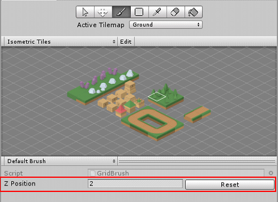

要创建用于绘制等距瓦片地图的__瓦片面板 (Tile Palette)__，请执行以下操作：
1.打开 Tile Palette 窗口（菜单：__Window > 2D > Tile Palette__）：

2.选择 Create New Palette 以打开其下拉菜单。
3.将 Grid type 设置为与当前绘制的 Isometric 或 Isometric Z As Y 瓦片地图相同的布局。
4.将 Cell Size 设置为 Manual。将 X 和 Z 保留为默认值，但将 Y 设置为与瓦片地图 Cell Size 的 Y 值相同的值。此值取决于瓦片地图的投影类型。请参阅创建等距瓦片地图页面以了解更多详细信息。

5.选择 Create 以完成设置，并创建新的瓦片面板资源。

6.要对瓦片面板进行任何更改，请双击资源文件夹中的资源以将其作为预制件打开，然后在此处进行更改。
在 Isometric Z as Y Tilemap 上绘制瓦片时，请通过设置 Z Position 值来定义所绘制的 Grid 的 Z 位置。对于这种类型的瓦片地图，Z 位置值转换为沿 Y 轴的偏移，并且以不同 Z 位置绘制的瓦片在瓦片地图上看起来具有不同的高度。
Z Position 编辑器位于瓦片地图面板 (Tilemap Palette) 底部：

通过输入所需的值（仅整数）调整 Z Position 值。系统会使用设置的 Z 位置值在网格上绘制瓦片，直到更改或重置该值。要将值改回默认值 0，请选择 Reset。
在 Scene 视图中，画笔预览会将单元格原始位置（Z 值为 0）的瓦片显示为蓝色轮廓，而其应用了 Z-as-Y 偏移的绘制位置则显示为白色轮廓。
选择瓦片画笔后，使用以下快捷键快速切换到不同的 Z 位置。
| 快捷键： | 命令： |
|---|---|
| - | 将 Z 位置增加 1 |
| = | 将 Z 位置减小 1 |
要删除瓦片，请将__擦除画笔 (Erase Brush)__ 设置为与要删除的目标瓦片相同的 Z 位置。擦除画笔 (Erase Brush) 不会擦除与目标瓦片不同的 Z 位置上绘制的瓦片。